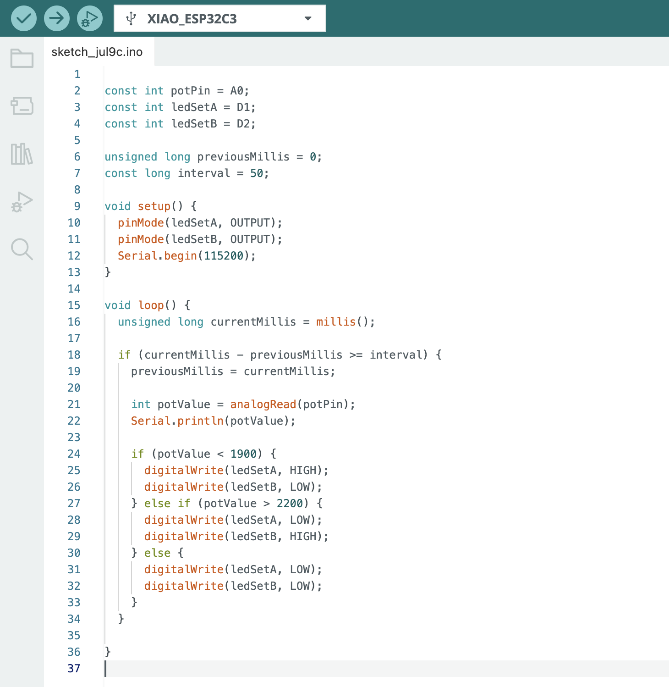

<div class="textcontainer">
<p class="margin"> </p>
<h3>Week 4: Microcontroller Programming</h3>
<h4>For My Arduino project, I wired up and programmed my microcontroller in a way that if you turn a potentiometer one way, it displays a smiley face using LED's and when you turn the potentiometer the other way it displays a sad face. as a beginner, this project was difficult but a great experience and taught me programming fundementals. </h4>
<br>
<html lang="en">
<head>
<meta charset="UTF-8">
<title>Media in One Row</title>
<style>
.media-row {
display: flex;
gap: 10px; /* space between items */
justify-content: center;
align-items: flex-start;
flex-wrap: nowrap; /* don't allow wrap */
}
</style>
</head>
<body>
<div class="media-row">
<img style="height: 500px; width: 300px;" src="./topview.jpg" alt="front view">
<video width="800" height="500" controls>
<source src="smileydemo.mp4" type="video/mp4">
Your browser does not support the video tag.
</video>
<img style="height: 500px; width: 300px;" src="./LEDsideview.jpg" alt="side view">
<
</div>
</body>
</html>
<br>
<br>
<h4> I coded the microcontroller to read the potentiometer value, and if the value was greater than 2200, it would supply power to one set of LED's (Pin D1) and if the potentiometer value was less than 1900, it would supply power to the other set of LED's (Pin D2) </h4>

</div>